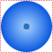

PortVolumeFixed volume associated with a port by the finite volume method |

|
Information
This information is part of the Modelica Standard Library maintained by the Modelica Association.
This component models the volume of fixed size that is associated with the fluid port to which it is connected. This means that all medium properties inside the volume, are identical to the port medium properties. In particular, the specific enthalpy inside the volume (= medium.h) is always identical to the specific enthalpy in the port (port.h = medium.h). Usually, this model is used when discretizing a component according to the finite volume method into volumes in internal ports that only store energy and mass and into transport elements that just transport energy, mass and momentum between the internal ports without storing these quantities during the transport.
Parameters (8)
| V |
Value: 1e-6 Type: Volume (m³) Description: Fixed size of junction volume |
|---|---|
| use_p_start |
Value: true Type: Boolean Description: Select p_start or d_start |
| p_start |
Value: 101325 Type: AbsolutePressure (Pa) Description: Initial pressure |
| d_start |
Value: 1 Type: Density (kg/m³) Description: Initial density |
| use_T_start |
Value: true Type: Boolean Description: Select T_start or h_start |
| T_start |
Value: Modelica.SIunits.Conversions.from_degC(20) Type: Temperature (K) Description: Initial temperature |
| h_start |
Value: 1.e4 Type: SpecificEnthalpy (J/kg) Description: Initial specific enthalpy |
| X_start |
Value: Type: MassFraction[Medium.nX] (kg/kg) Description: Initial mass fractions m_i/m |
Connectors (1)
| port |
Type: FluidPort_a |
|---|
Components (1)
| medium |
Type: BaseProperties |
|---|
Used in Components (2)
|
Modelica.Media.Examples.Tests.Components
Basic test model to test a medium |
|
|
Modelica.Media.Examples.Tests.Components
Slightly larger test model to test a medium |